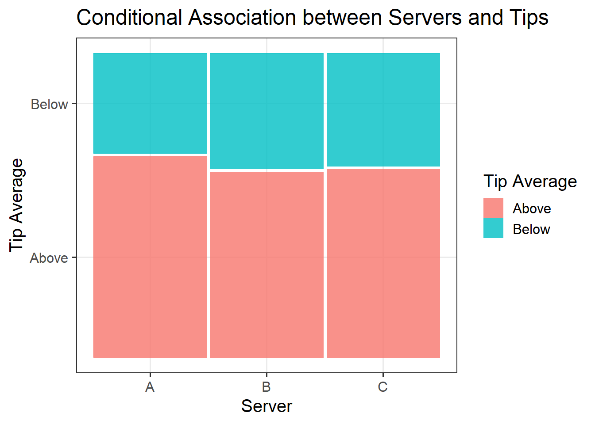
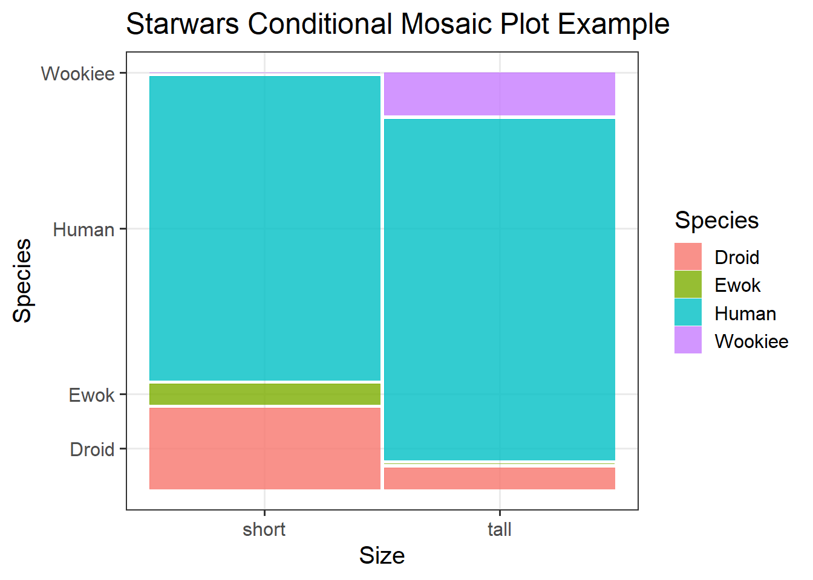

Probability Rules
Semester 1 - Week 8
In this block of the course (weeks 7-11), you should produce a PDF report using Rmarkdown for which you will receive formative feedback in week 12.
The report should not include any reference to R code or functions, but be written or a generic reader who is only assumed to have a basic statistical understanding without any R knowledge. You should also avoid any R code output or printout in the PDF file.
You will be required to submit a PDF file by 12 noon on Friday the 2nd of December 2022 via Learn. One person needs to submit on behalf of your group.
-
The report should be at most 6 pages long. At the end of the report, you are allowed two appendices which both don’t count towards the page limit.
- Appendix A will contain any tables or figures which you cannot fit in the page limit (no text allowed)
- Appendix B will contain the code to reproduce the report results (just like Formative Report A).
No extensions allowed. As this is group-based work, no extensions are possible.
Hollywood Movies. At the link https://uoepsy.github.io/data/hollywood_movies_subset.csv you will find data on Hollywood movies released between 2012 and 2018 from the top 5 lead studios and top 10 genres. The following variables were recorded:
-
Movie: Title of the movie -
LeadStudio: Primary U.S. distributor of the movie -
RottenTomatoes: Rotten Tomatoes rating (critics) -
AudienceScore: Audience rating (via Rotten Tomatoes) -
Genre: One of Action Adventure, Black Comedy, Comedy, Concert, Documentary, Drama, Horror, Musical, Romantic Comedy, Thriller, or Western -
TheatersOpenWeek: Number of screens for opening weekend -
OpeningWeekend: Opening weekend gross (in millions) -
BOAvgOpenWeekend: Average box office income per theater, opening weekend -
Budget: Production budget (in millions) -
DomesticGross: Gross income for domestic (U.S.) viewers (in millions) -
WorldGross: Gross income for all viewers (in millions) -
ForeignGross: Gross income for foreign viewers (in millions) -
Profitability: WorldGross as a percentage of Budget -
OpenProfit: Percentage of budget recovered on opening weekend -
Year: Year the movie was released -
IQ1-IQ50: IQ score of each of 50 audience raters (every movie had different raters) -
Snacks: How many of the 50 audience raters brought snacks -
PrivateTransport: How many of the 50 audience raters reached the cinema via private transportation
1 Tasks
For formative report B, you will be asked to perform the following tasks, each related to a week of teaching in this course.
This week you will only focus on task B2.
B1) Create and summarise categorical variables, before calculating probabilities.
B2) Investigate if events are independent, and compute probabilities.
B3) Computing and plotting probabilities with a binomial distribution.
B4) Computing and plotting probabilities with a normal distribution.
B5) Plot standard error of the mean, and finish the report write-up (i.e., knit to PDF, and submit the PDF for formative feedback).
2 B2 sub-tasks
To see the hints, hover your cursor on the superscript numbers.
In this section you will find some guided sub-steps you may want to consider to complete task B2.
- Reopen last week’s Rmd file, as you will continue last week’s work (i.e., the top 3 most frequent movie genres that were rated as ‘good’ and ‘bad’), and build on it.1
- What’s the probability of a movie being rated as Good?2
- Given that a viewer watched a Drama movie, what’s the probability of them giving a good rating?3
Given that a viewer watched an Action movie, what’s the probability of them giving a good rating?
Given that a viewer watched a Comedy movie, what’s the probability of them giving a good rating?
Given that a viewer gave a bad rating, what’s the probability of them having watched a non-drama movie? 4
Consider three mutually exclusive events \(A_1, A_2, A_3\) and another event \(B\).
We have that:
\[ \begin{aligned} P\big((\sim A_3) | B\big) &= P\big( (A_1 \cup A_2) | B \big) \\ &= \frac{P\big((A_1 \cup A_2) \cap B\big)}{P(B)} \\ &= \frac{P\big((A_1 \cap B) \cup (A_2 \cap B)\big)}{P(B)} \\ &= \frac{P(A_1 \cap B) + P(A_2 \cap B)}{P(B)} \end{aligned} \]
Suppose \(A_1 = Action\), \(A_2 = Comedy\), \(A_3 = Drama\), and \(B = Bad\).
\[ \begin{aligned} P\big((\sim Drama) \mid Bad\big) &= P\big( (Action \cup Comedy) \mid Bad \big) \\ &= \frac{P\big((Action \cup Comedy) \cap Bad\big)}{P(Bad)} \\ &= \frac{P\big((Action \cap Bad) \cup (Comedy \cap Bad)\big)}{P(Bad)} \\ &= \frac{P(Action \cap Bad) + P(Comedy \cap Bad)}{P(Bad)} \end{aligned} \]
- What’s the probability of a rater watching a Drama movie or rating a movie as Bad?5
- Do you think that a movie receiving a Good rating is independent of Genre?6
- Based on your analysis above, which movie Genre do you think lead studios should invest in for their next movie?7
- Using a conditional mosaic plot, display the conditional distribution of movie genres being rated as either good or bad, making sure to add a main title and clear axis titles.8
- In the analysis section of your report, write up a summary of what you have reported above, using proper rounding to 2 decimal places and avoiding any reference to R code or functions. In particular, focus on whether events were independent, and which genre of movie lead studios should consider investing in based on audience ratings.9
3 Worked Example
Consider the dataset available at https://uoepsy.github.io/data/RestaurantTips.csv, containing 157 observations on the following 7 variables:
| Variable Name | Description |
|---|---|
| Bill | Size of the bill (in dollars) |
| Tip | Size of the tip (in dollars) |
| Credit | Paid with a credit card? n or y |
| Guests | Number of people in the group |
| Day | Day of the week: m=Monday, t=Tuesday, w=Wednesday, th=Thursday, or f=Friday |
| Server | Code for specific waiter/waitress: A, B, or C |
| PctTip | Tip as a percentage of the bill |
These data were collected by the owner of a bistro in the US, who was interested in understanding the tipping patterns of their customers. The data are adapted from Lock et al. (2020).
library(tidyverse) # we use read_csv and glimpse from tidyverse
tips <- read_csv("https://uoepsy.github.io/data/RestaurantTips.csv")
head(tips)# A tibble: 6 × 7
Bill Tip Credit Guests Day Server PctTip
<dbl> <dbl> <chr> <dbl> <chr> <chr> <dbl>
1 23.7 10 n 2 f A 42.2
2 36.1 7 n 3 f B 19.4
3 32.0 5.01 y 2 f A 15.7
4 17.4 3.61 y 2 f B 20.8
5 15.4 3 n 2 f B 19.5
6 18.6 2.5 n 2 f A 13.4Working with the “Tip_Avg” variable created last week, we can see our relative frequency table for all of our servers (A, B, and C) who were tipped either Above or Below the standard tipping rate in the US (i.e., 15%).
tips2 <- tips %>%
mutate(Tip_Avg = ifelse(PctTip <= 15, 'Below', 'Above'))
rel_freq_tbl <- table(tips2$Server, tips2$Tip_Avg) %>%
prop.table() %>%
addmargins()
rel_freq_tbl
Above Below Sum
A 0.25477707 0.12738854 0.38216561
B 0.25477707 0.15923567 0.41401274
C 0.12738854 0.07643312 0.20382166
Sum 0.63694268 0.36305732 1.00000000- What’s the probability of a customer tipping above average?
# P(above) = 0.25477707 + 0.25477707 + 0.12738854
# P(above) = 0.63694268# indexing: table[row numbers, col numbers]
rel_freq_tbl[4, 1][1] 0.6369427# or indexing: table[row names, col names]
rel_freq_tbl['Sum', 'Above'][1] 0.6369427\(P(Above) ≈ 0.64\)
- Given that the server is A, what’s the probability of receiving an above average tip?
#P(above | server A) = 0.25477707 / 0.38216561
#P(above | server A) = 0.6666667\(P(Above | Server A) ≈ 0.67\)
- Given that the server is B, what’s the probability of receiving an above average tip?
#P(above | server B) = 0.25477707 / 0.41401274
#P(above | server B) = 0.6153846\(P(Above | Server B) ≈ 0.62\)
- Given that the server is C, what’s the probability of receiving an above average tip?
#P(above | server C) = 0.12738854 / 0.20382166
#P(above | server C) = 0.625\(P(Above | Server C) ≈ 0.63\)
- Given that a server received a tip below average, what’s the probability of them being Server A or B?
# P( (server A ∪ server B) | below ) =
# (P( server A ∩ below ) + P( server B ∩ below )) / P(below) =
# (0.12738854 + 0.15923567) / 0.36305732 =
# 0.7894737 \(P((Server A \cup Server B) \mid Below) ≈ 0.79\)
- What’s the probability of the customer being served by server A or tipping below 15%?
# P(server A) = 0.38216561
# P(below) = 0.36305732
# P(server A ∩ below) = 0.12738854
# P(server A) + P(below) - P(server A ∩ below) =
# (0.38216561 + 0.36305732) - 0.12738854 =
# 0.6178344 ≈ 0.62\(P(Server A \cup Below) ≈ 0.62\)
- Is tipping above average independent of the server?
No, the events seem to be dependent, but very weakly. The conditional probabilities of tipping above average for each server are different from P(above), even though to a small degree. In particular, the probability of tipping above average after service from Server A is higher.
- Based on your analysis above, which server do you think offers the best customer service based on their tips?
Server A appears to offer the best service to their customers, based solely on their personal tips - they had a much higher probability of receiving an above average tip (67%) than a below average tip (33%).
- To visualise our findings, we could use a conditional mosaic plot:
library(ggmosaic)
mos_cond_plot <- ggplot(tips2) +
geom_mosaic(aes(x = product(Tip_Avg), fill = Tip_Avg, conds = product(Server))) +
labs(title = "Conditional Association between Servers and Tips",
x = "Server",
y = "Tip Average",
fill = "Tip Average")
mos_cond_plot
It was more likely for customers to tip above (64%) than below (36%) average. Though it was likely that all servers would receive an above average tip, tipping did not appear to be independent of server, based on conditional probabilities. Based on their personal tips, Server A appeared to offer the best service, where they were more likely to receive an above average tip (67%). Servers B and C were almost equally likely to receive above average tips (62% and 63% respectively). These associations are visually represented in Figure 2.
Recall the frequency table
rel_freq_tbl
Above Below Sum
A 0.25477707 0.12738854 0.38216561
B 0.25477707 0.15923567 0.41401274
C 0.12738854 0.07643312 0.20382166
Sum 0.63694268 0.36305732 1.00000000The following three definitions of independence are equivalent. Two events \(A\) and \(B\) are independent if one of these holds:
- \(P(A | B) = P(A)\)
- or \(P(B | A) = P(B)\)
- or \(P(A \cap B) = P(A) P(B)\)
For now, let’s focus on the third definition. To see if tipping above average is independent of the specific server, we can checks that condition separately for each server:
A. Is \(P(Server A \cap Above)\) equal to \(P(Server A) P(Above)\)?
# 0.25477707 is P(Server A ∩ Above)
0.38216561 * 0.63694268 # P(Server A) * P(Above)[1] 0.2434176B. Is \(P(Server B \cap Above)\) equal to \(P(Server B) P(Above)\)?
# 0.25477707 is P(Server B ∩ Above)
0.41401274 * 0.63694268 # P(Server B) * P(Above)[1] 0.2637024C. Is \(P(Server C \cap Above)\) equal to \(P(Server C) P(Above)\)?
# 0.12738854 is P(Server C ∩ Above)
0.20382166 * 0.63694268 # P(Server C) * P(Above)[1] 0.1298227For server A and B, the values are close enough but not exactly equal. However, for server C, the values are identical up to the 2nd decimal place. This suggests the events are dependent, but to a small extent.
4 Student Glossary
To conclude the lab, add the new functions to the glossary of R functions.
| Function | Use and package |
|---|---|
| |
? |
/ |
? |
conds |
? |
References
Footnotes
Hint: Ask last week’s driver for the Rmd file, they should share it with the group via email or Teams. To download the file from the server, go to the RStudio Files pane, tick the box next to the Rmd file, and select More > Export.↩︎
-
Hint: For the starwars example data, if we were to ask what is the probability of a species being short, i.e. P(short), we would calculate the following:
P(Droid ∩ short) + P(Ewok ∩ short) + P(Human ∩ short) + P(Wookiee ∩ short) = 0.10256410 + 0.02564103 + 0.38461538 + 0.00000000 = 0.51282051 ≈ 0.51.
Alternatively, we would use look in the “Sum” value under the “short” column of our table.
↩︎swars_rel_freq_sumshort tall Sum Droid 0.10256410 0.02564103 0.12820513 Ewok 0.02564103 0.00000000 0.02564103 Human 0.38461538 0.41025641 0.79487179 Wookiee 0.00000000 0.05128205 0.05128205 Sum 0.51282051 0.48717949 1.00000000# P(short) = 0.51282051 ≈ 0.51 -
Hint: For the starwars example data, if we were to ask what is the probability of being short for the Human species, i.e. P(short | human), we could calculate the following:
P(short | human) = P(short ∩ human) / P(human) = (0.38461538 / 0.79487179) = 0.483871 ≈ 0.48.
↩︎swars_rel_freq_sumshort tall Sum Droid 0.10256410 0.02564103 0.12820513 Ewok 0.02564103 0.00000000 0.02564103 Human 0.38461538 0.41025641 0.79487179 Wookiee 0.00000000 0.05128205 0.05128205 Sum 0.51282051 0.48717949 1.00000000# P(short | human) = P(short ∩ human) / P(human) = # (0.38461538 / 0.79487179) = 0.483871 ≈ 0.48 -
Hint: For the starwars example data, if we were to ask what is the probability of a character being not a human given they are short, we could calculate the following:
↩︎swars_rel_freq_sumshort tall Sum Droid 0.10256410 0.02564103 0.12820513 Ewok 0.02564103 0.00000000 0.02564103 Human 0.38461538 0.41025641 0.79487179 Wookiee 0.00000000 0.05128205 0.05128205 Sum 0.51282051 0.48717949 1.00000000# P((~human) | short) = # (P(droid ∩ short) + P(ewok ∩ short) + P(wookiee ∩ short)) / P(short) = # (0.10256410 + 0.02564103 + 0.00000000) / 0.51282051 = 0.25 -
Hint: If we were to ask what is the probability of a species being Droid or being tall, i.e. P(Droid ∪ tall), we would compute the probability as:
P(Droid ∪ tall) = P(Droid) + P(tall) - P(Droid ∩ tall)
↩︎swars_rel_freq_sumshort tall Sum Droid 0.10256410 0.02564103 0.12820513 Ewok 0.02564103 0.00000000 0.02564103 Human 0.38461538 0.41025641 0.79487179 Wookiee 0.00000000 0.05128205 0.05128205 Sum 0.51282051 0.48717949 1.00000000# P(Droid) = 0.12820513 # P(tall) = 0.48717949 # P(Droid ∩ tall) = 0.02564103 # P(Droid ∪ tall) = P(Droid) + P(tall) - P(Droid ∩ tall) = # 0.12820513 + 0.48717949 - 0.02564103 = 0.5897436 ≈ 0.59 -
Hint: Recall that we say that two events \(A\) and \(B\) are independent if knowing that one occurred doesn’t change the probability of the other occurring, i.e. \(P(A | B) = P(A)\).
In the starwars example, we would say that being short seem to be dependent on the species, given that the conditional probabilities are different from P(short). For example, the probability of being short for Ewoks and Droids is much higher than P(short):
↩︎#P(short) ≈ 0.51 #P(short | droid) ≈ 0.80 #P(short | ewok) ≈ 1 #P(short | human) ≈ 0.48 #P(short | wookiee) ≈ 0 Hint: Here it would be useful to think about which movie genre offers the best audience experience - lead studios will likely want to invest in making movies in Genres that people enjoy watching!↩︎
-
Hint: Make sure to load the
ggmosaicpackage so that you can specifygeom_mosaic()when building your plot. To add a title, as well as x- and y-axis titles, specifylabs(title = , x = , y = ). This week we will also need to specify theconds()argument.Example: For the
starwarsdataset, I create a mosaic plot using the following code, and specify conds() within my aes() argument:↩︎library(ggmosaic) m_plot <- ggplot(starwars2) + geom_mosaic(aes(x = product(size), fill = size, conds = product(species))) + labs(title = "Starwars Conditional Mosaic Plot Example", x = "Species", y = "Size", fill = "Size") m_plot
Figure 1: Starwars Mosaic Plot Example Title -
Hint: You may want to consider using proper notation in your write-up (as you have seen in lectures). To do so, you can use
$ name $. For example, if I wanted to specify the general addition rule, in the main Rmd file (i.e., not a code chunk) I could write$p(A \cup B) = p(A) + p(B) - p(A \cap B)$. This would render in my main file as:\(p(A \cup B) = p(A) + p(B) - p(A \cap B)\)
To get the \(\cup\) symbol, use the command
$A \cup B$.To get the \(\cap\) symbol, use the command
$A \cap B$.↩︎